Scientific Expertise
Where the kitchen meets the lab: fermentation science, financial rigor, and the software tools I use to design, measure and report on food.
From food waste to fermented innovation
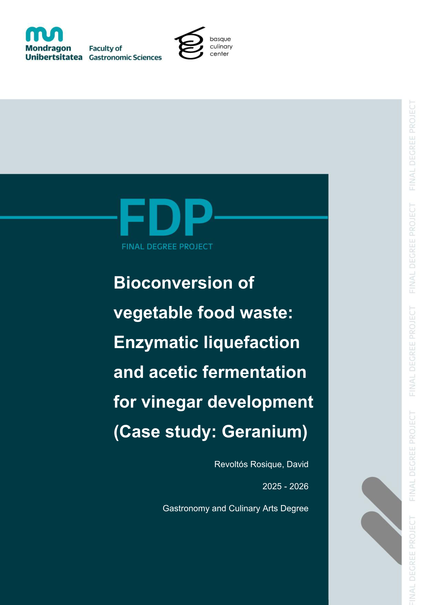
R&D Intern & Chef de Partie · Geranium, Copenhagen · Feb–Jul 2026
Turning kitchen waste into scalable fermented ingredients
Re-hired by Geranium specifically to develop my University Bachelor's Thesis, I investigated the application of food enzymes and developed scalable methods to transform food waste into fermented subproducts, creating solutions for sustainable ingredient production inside a 3-Michelin-star kitchen.
Three pillars, one discipline
Directly from my academic and professional training: the technical range behind the plate.
Food Science & R&D
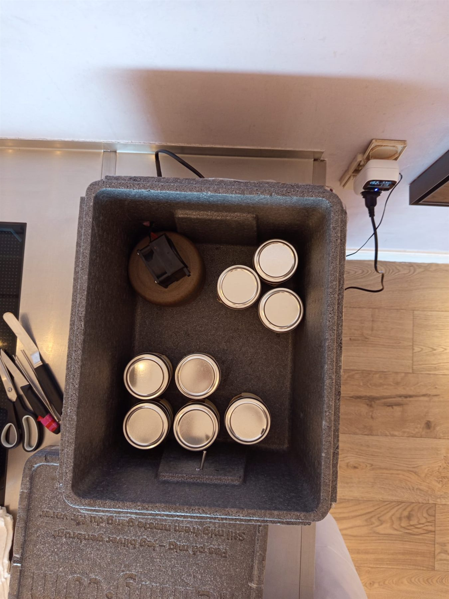
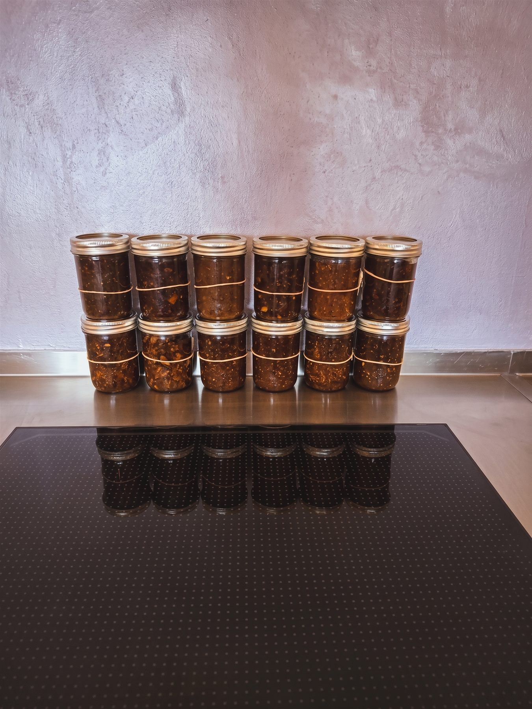
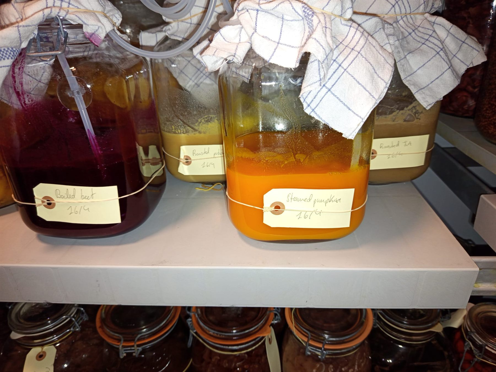
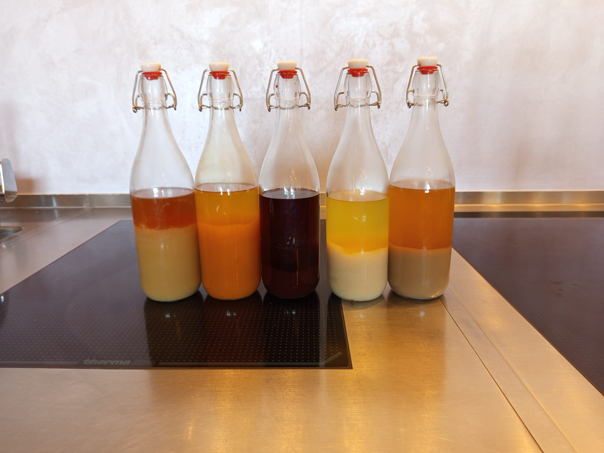
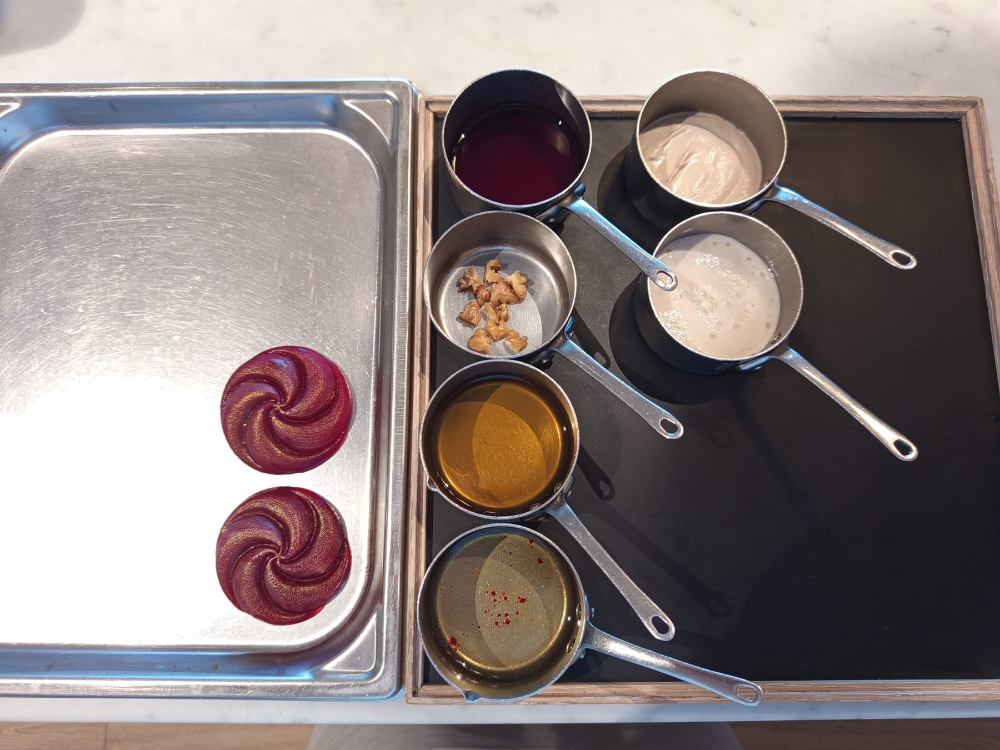
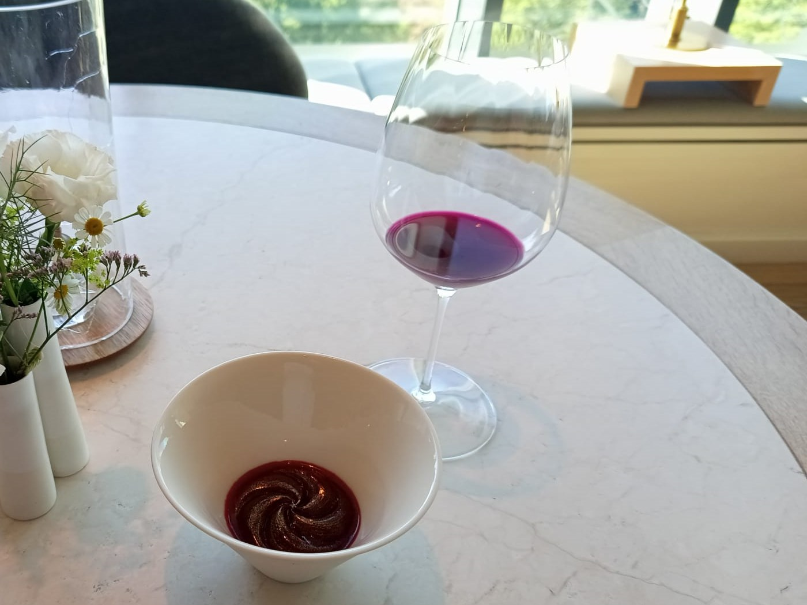
Software, Data & AI
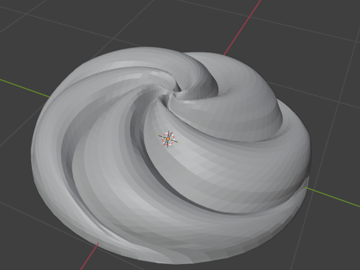
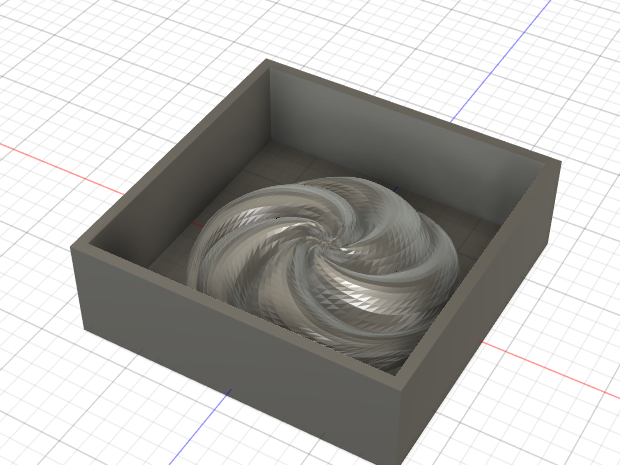
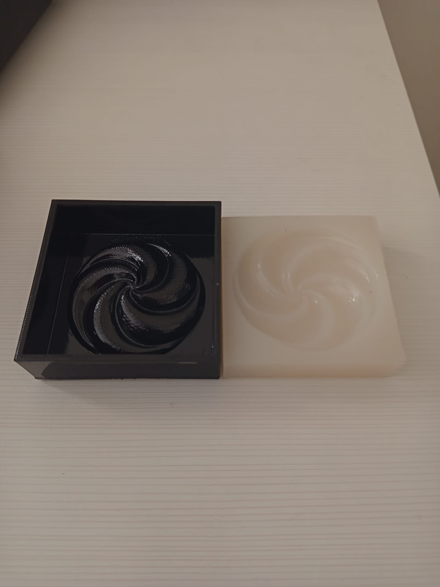
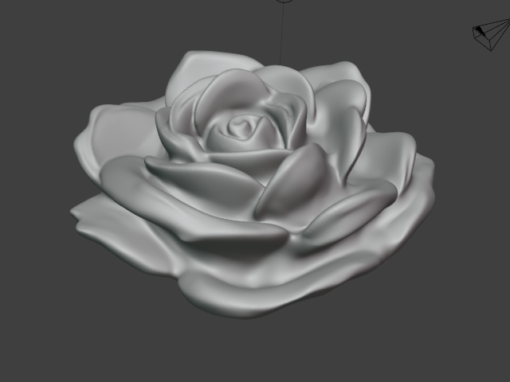
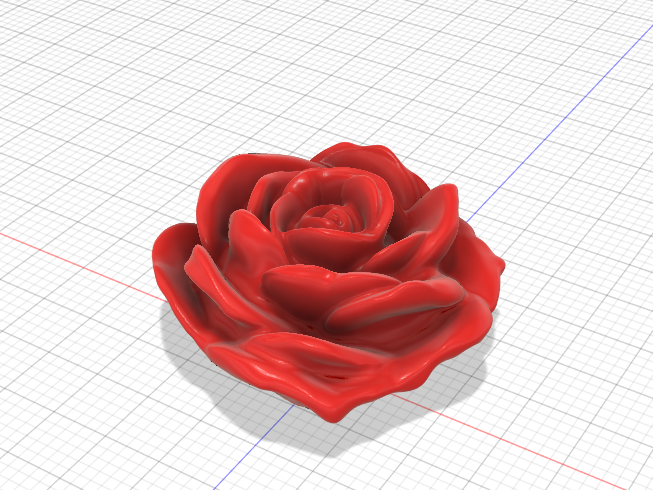
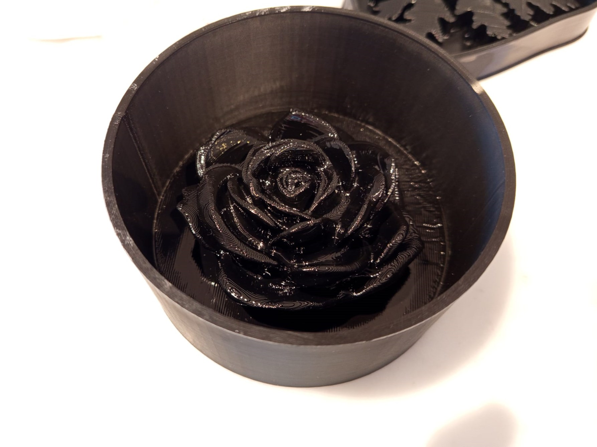
Culinary Management
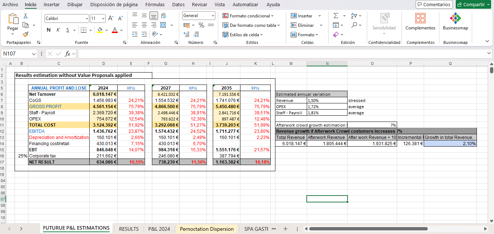
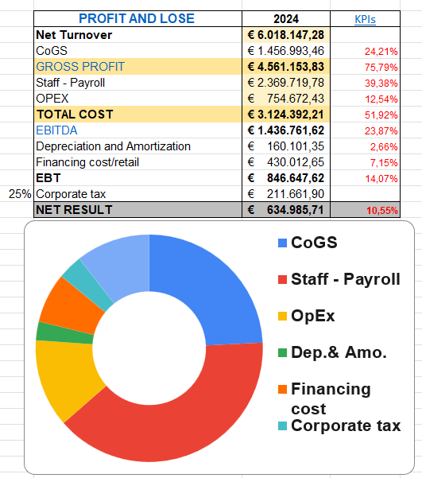
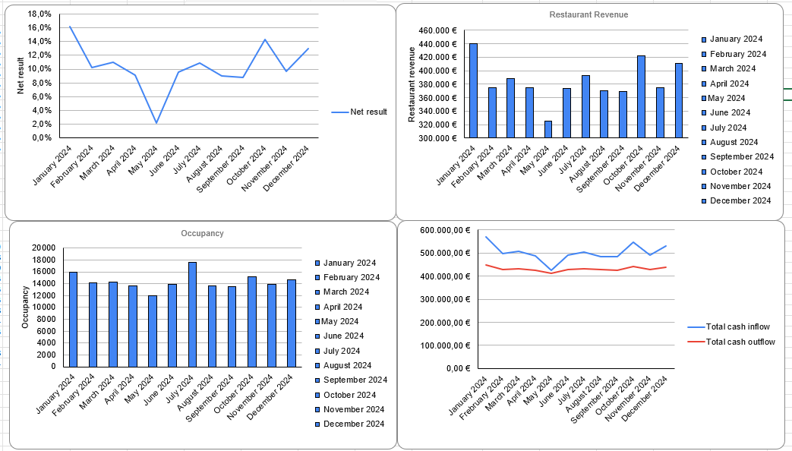
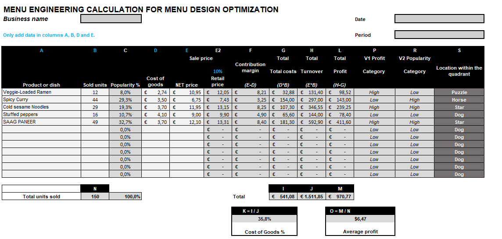
Let's talk about your kitchen.
Whether it's a fine-dining pass or a food-science lab, I'd love to hear about the project.